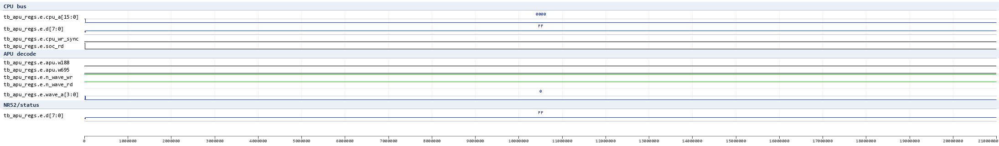
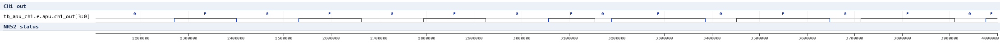
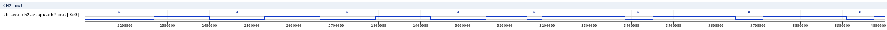
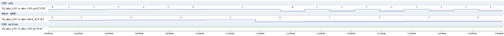
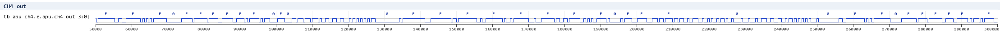
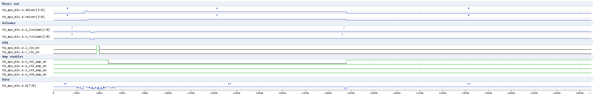

APU waves (issue #398)
Waveform documentation for the APU suite (HDL/soc/icarus/apu), rendered
from the test VCDs with vcd2png.py (Pillow; .gtkw v3.3.128 save files
sit next to each test). All timing facts below were measured on the real
APU netlist (apu_wc.v, see Readme.md/STATUS.md).
tb_apu_regs - register file
CPU write/read cycles to $FF10-$FF2F + the wave-RAM window $FF30-$FF3F.
Shown: the address/data bus, the soc_wr-derived decode (w188), the
wave-RAM window decode w695 and the n_wave_wr/n_wave_rd strobes.

Verified facts:
-
register read-back masks (NR10 = 0x80|v, NR11 = 0x3F|(v&0xC0), NR14 = 0xBF|(v&0x40), ...; NR52 = 0x70|(power<<7)|status); freq-lo registers (NR13/NR23/NR33) have no read-back (0xFF on read).
-
$FF30-$FF3F accesses are decoded inside the APU (
w695window).
tb_apu_ch1 - channel 1 square
Two duty segments (50% then 75%, X=0x780): the square high interval is 1/2 (then 3/4) of the 262.144 us output period.

Verified facts:
-
output period = (2048-X)*32 osc = 262144 ns at X=0x780 (duty cycle table exact: 12.5/25/50/75%).
-
high level = NR12 volume; NR52 status bit0 tracks the channel.
tb_apu_ch2 - channel 2 square
Same structure as ch1 (no sweep) - works only with the w548 bus-model fix
(apu_wc.v), see STATUS.md for the root cause.

tb_apu_ch3 - channel 3 wave
Vol-100% segment with a known wave-RAM image: ch3_out sits at the
sample value F while ch3_active/wave_a step the RAM at
(2048-X)*2 osc per sample (X=0x7F0 -> ~2 us/step in this window).

Verified facts:
- amplitude = sample scaled by NR32 (100/50/25%/mute measured);
- sample rate = 2^21/(2048-X) (steps measured 8x between X=0x7F0 and X=0x780).
tb_apu_ch4 - channel 4 noise
LFSR output at NR43 divisor 0, 15-bit width: the level toggles between 0 and F (NR42 volume) - a pseudo-random pattern, not a square.

tb_apu_mix - mixer / volume / DAC enables
CPU writes to NR51/NR50/NR52 while the mixer outputs (lmixer/rmixer, n_lvolume/n_rvolume, vin, n_ch*_amp_en) are probed.

Verified facts:
- NR51 low nibble -> right (SO1) mixer, high nibble -> left (SO2);
- NR50 volumes appear inverted on n_lvolume/n_rvolume; bits 7/3 -> vin;
- n_ch*_amp_en follow the channel running / NR52 power state.